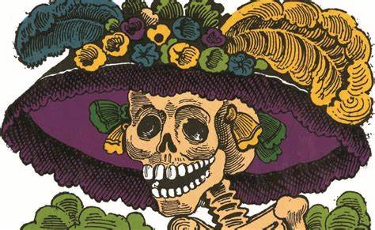
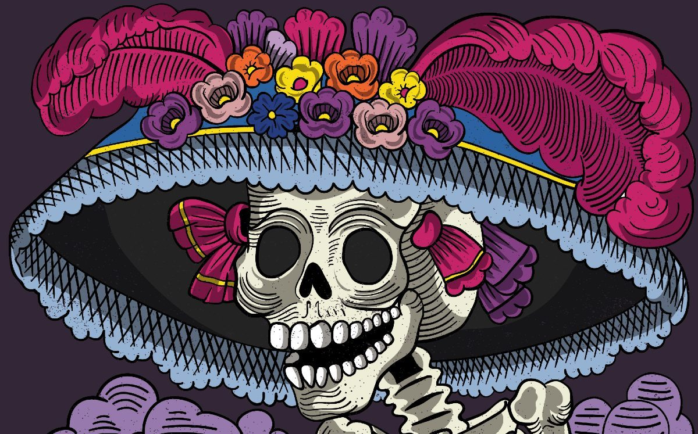
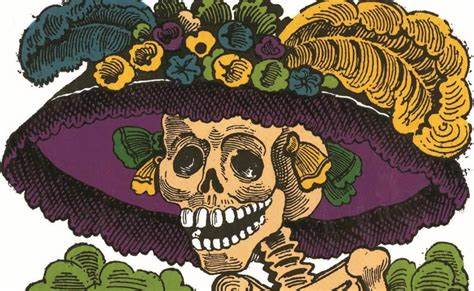
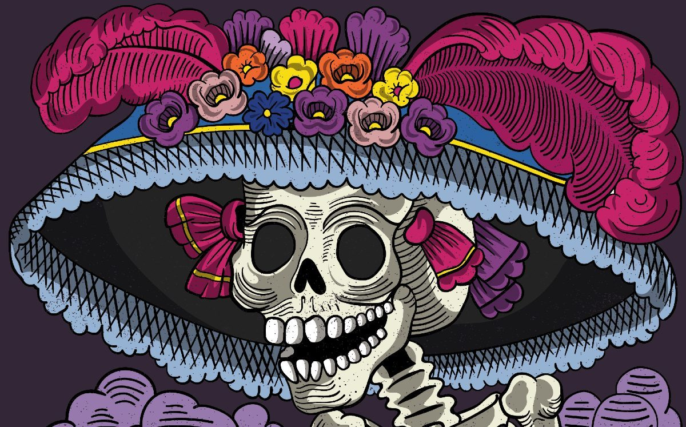

Jose Guadalupe Posada Aguilar nacio el 2 de febrero de 1852
en la ciudad de Aguascalientes. Poseia un talento natural para el grabado, despues de aprender a leer y escribir con su hermano Jose Cirilo Posada, y superar una empecinada oposicion familiar,
ingreso a la Academia Municipal de Dibujo de Aguascalientes. Posteriormente, en 1868, entro como aprendiz en el taller litografico de Trinidad Pedroza. Algunas de sus primeras caricaturas de
critica politica fueron publicados en El Jicote, periodico de oposicion al gobierno de Jeses Gomez Portugal. Comenzo su carrera haciendo dibujos, copiando imagenes religiosas y como ayudante de un taller de ceramica.
El que creeo la primera catrina mexicana.
La Catrina mexicana es uno de los iconos mas representativos de la cultura en Mexico y un personaje que no puede faltar en Dia de Muertos, ya que es un simbolo de muerte.
El pintor e ilustrador Guadalupe Posada creo este personaje con el objetivo de hacer una critica social hacia las clases medias y privilegiadas. Dichos comentarios los publicaba en los periodicos y junto a estos siempre colocaba a
"La Calavera Garbancera".
Y es que, el "garbancero" o "garbancera" eran las personas que negaban tener raices indigenas y pretendian ser europeos. Bajo esta critica, Posada dibujo una calavera con un sombrero ostentoso,
el cual hacia alusion a aquellos que querian aparentar o ser mas de lo que era en realidad.
Posteriormente, el muralista Diego Rivera completo el atuendo con un vestido elegante en su obra "Sueno de una tarde dominical en la Alameda Central". Esta figura fue conocida como "La Catrina".
El Dia de Muertos en Mexico se celebra anualmente los dias 1 y 2 de noviembre, sin embargo, la traicion en algunas familias comienza desde el 27 de octubre, ya que de acuerdo a cada creencia se honra
la memoria de animales, bebes, ninos, enfermos, personas que fallecieron en un accidente y mucho mas, pero cada uno tiene un dia y hora determinada.
oy en dia, es dificil pensar en el Dia de Muertos sin que nos venga a la mente la imagen de las calaveras. Este motivo se ha convertido en un elemento esencial de esta celebracion y, si bien el
culto a la muerte en Mexico existe desde la epoca prehispanica, su popularidad puede ser atribuida a una persona: el grabador y caricaturista Jose Guadalupe Posada.
Posada es conocido por ser el hombre detras de La Catrina; sin embargo, sus contribuciones al arte popular mexicano van mucho mas alla de esta ilustracion, sirviendo como inspiracion a grandes artistas del siglo XX como Diego Rivera y Jose Clemente Orozco.
A traves de sus caricaturas y grabados
humoristicos, las calacas de Posada sirvieron como un instrumento de critica social y politica, ayudando a establecer la imagen de la calavera en el imaginario colectivo mexicano.
La Catrina
Buena parte de vida profesional de Posada tuvo lugar durante el Porfiriato. Si bien este periodo trajo grandes avances tecnologicos y relativa paz al pais, tambien desencadeno un enorme aumento en la desigualdad social. Con esto en mente, Posada creo
la Calavera Garbancera en 1910. Hoy conocida como La Catrina, esta caricatura porta un gran sombrero de plumas, reminiscente a los que se usaban en Europa a principios del siglo XX. El termino "garbancera" se utilizaba para describir a las personas de sangre
indigena que pretendian ser europeas, rechazando su raza, herencia y cultura. La calavera no lleva ropa, ilustrando la gran hipocresia de estas personas: "En los huesos, pero con sombrero frances con sus plumas de avestruz".
Fue el creador de nuestra primera catrina mexicana, donde les dejo un poco de su historia de cuando nacio y cuando creo la primera catrina garbancera
en que ano fue la creacion de la primera catrina fue creada en 1910
 


